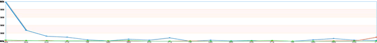
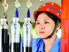
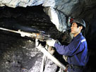
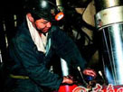
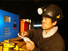
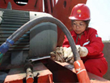
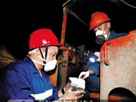

微博
外媒报道
外媒：中共十八大必将是历史性大会
- 美国侨报 | 十八大是研判中共未来发展重要契机
- 联合早报 | 中国外交未来十年须提升软实力
- 环球杂志 | 十八大五大看点
- 巴西共产党 | 中共十八大对世界具有重大意义
- 金融时报 | 外媒关注未来中国外交 中美和中日关系成焦点
新闻中心

代表故事
-

十八大代表 张英
安全生产的守护天使
-

十八大代表 欧建春
矿工兄弟们的“代言人”
-

十八大代表 潘兴喜
安全采煤12年 带班创记录
-
十八大代表 吕丽
水矿集团老鹰山煤矿女工
-
十八大代表 白国周
中平能化开拓四队班长
-

十八大代表 王雷雨
同煤集团机电副队长
-
十八大代表 肖本平
黄石工矿集团煤矿工人
-
十八大代表 张文市
矿业机掘组长
-
十八大代表 杨杰
煤海深处的“机电大王”
-

十八大代表 尤立红
当合格油井“医生”
-

十八大代表 黄文宣
从深矿井里走出的代表
-
十八大代表 措吉
拉萨河畔就是我的家
-
十八大代表 刘卫红
奉献是一种快乐
-
十八大代表 吕清森
不改“楷模”本色
-
十八大代表 张宏妹
合肥发电有限公司工人
-
十八大代表 李毓龙
电网的“守护神”
-
十八大代表 段煜芬
为了万家灯火更通明
-
十八大代表 叶钦
建筑农民工当上党代表
历届党代会
- > 中共一大 1921.7.23 - 31 北京
- > 中共二大 1922.7.16 - 23 上海
- > 中共三大 1923.6.12 - 20 广州
- > 中共四大 1925.1.11 - 22 上海
- > 中共五大 1927.4.27 - 5.9 武汉
- > 中共六大 1928.6.18 - 7.11 莫斯科
- > 中共七大 1945.4.23 - 6.11 延安
- > 中共八大 1956.9.15 - 27 北京
- > 中共九大 1969.4.1 - 24 北京
- > 中共十大 1973.8.24 - 28 北京
- > 中共十一大 1977.8.12 - 18 北京
- > 中共十二大 1982.9.1 - 11 北京
- > 中共十三大 1987.10.25 - 11.1 北京
- > 中共十四大 1992.10.12 - 19 北京
- > 中共十五大 1997.9.12 - 18 北京
- > 中共十六大 2002.11.8 - 14 北京
- > 中共十七大 2007.10.15 - 21 北京